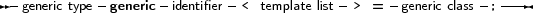
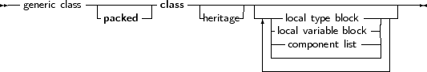
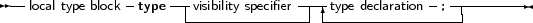
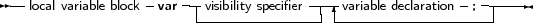
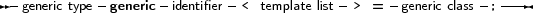
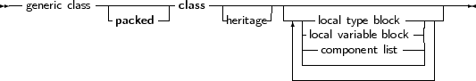
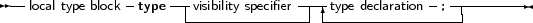
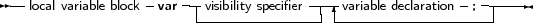

_________________________________________________________________________________________________________Generic class types





___________________________________________________________________
A generic class definition is much like a class definition, with the exception that it contains a list of placeholders for types, and can contain a series of local variable blocks or local type blocks, as can be seen in the following syntax diagram:
_________________________________________________________________________________________________________Generic class types




___________________________________________________________________
The generic class declaration should be followed by a class implementation. It is the same as a normal class implementation with a single exception, namely that any identifier with the same name as one of the template identifiers must be a type identifier.
The generic class declaration is much like a normal class declaration, except for the local variable and local type block. The local type block defines types that are type placeholders: they are not actualized until the class is specialized.
The local variable block is just an alternate syntax for ordinary class fields. The reason for introducing is the introduction of the Type block: just as in a unit or function declaration, a class declaration can now have a local type and variable block definition.
The following is a valid generic class definition:
Type
generic TList<_T>=class(TObject) type public TCompareFunc = function(const Item1, Item2: _T): Integer; var public data : _T; procedure Add(item: _T); procedure Sort(compare: TCompareFunc); end; |
This class could be followed by an implementation as follows:
procedure TList.Add(item: _T);
begin data:=item; end; procedure TList.Sort(compare: TCompareFunc); begin if compare(data, 20) <= 0 then halt(1); end; |
There are some noteworthy things about this declaration and implementation:
procedure TList.Sort(compare: TCompareFunc);
Var _t : integer; begin // do something. end; |
generic TList<_T>=class(TObject)
type public TCompareFunc = function(const Item1, Item2: _T): Integer; Public data : _T; procedure Add(item: _T); procedure Sort(compare: TCompareFunc); end; |